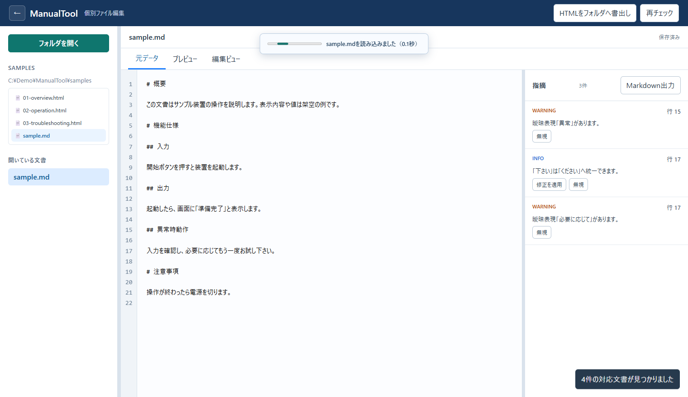
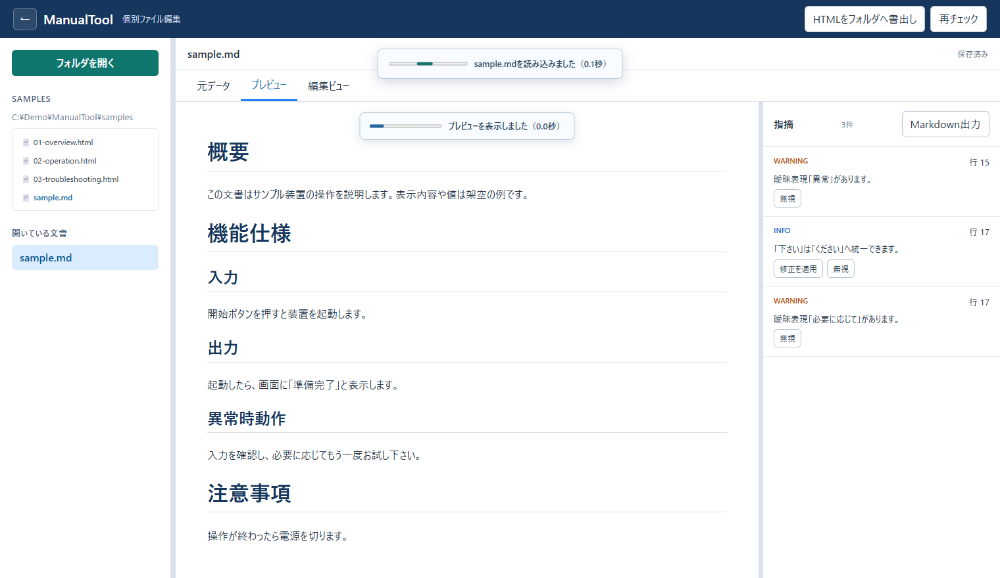
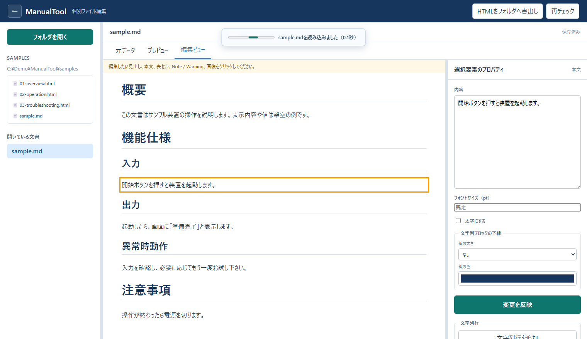
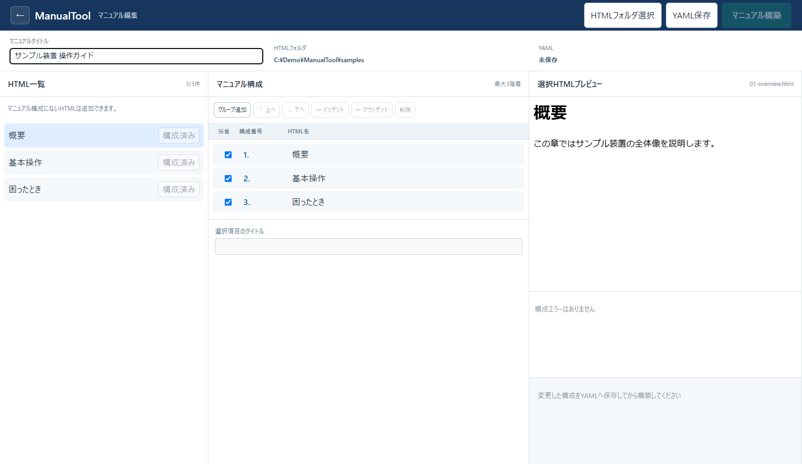

✎ ファイル変換編
Word、Markdown、HTMLを1文書ずつ開き、変換結果の確認・修正・HTML書き出しを行います。
入口：
LOCAL MANUAL WORKFLOW
Word・Markdown・HTMLを整える「ファイル変換」と、複数のHTMLを章立てして完成版を作る「マニュアル結合」の操作手順です。
ManualToolの起動画面では、目的に応じて次の2つの入口を選びます。このガイドの画面例は架空のデータを使用しています。
Word、Markdown、HTMLを1文書ずつ開き、変換結果の確認・修正・HTML書き出しを行います。
入口：
準備した複数のHTMLを並べ、最大3階層の章構成にして、目次付きの完成版HTMLを作ります。
入口：
配布フォルダはYoshiaki-Ida/Itemsのmainブランチ直下のmanual-tool/にあります。配布フォルダが手元にある場合は手順2から進めます。
Git for Windowsが入っているPCで、Itemsフォルダを作りたい場所をPowerShellで開き、次を実行します。
git --version
git clone --branch main --depth 1 --filter=blob:none --sparse https://github.com/Yoshiaki-Ida/Items.git Items
git -C .\Items sparse-checkout set manual-toolItems\manual-tool\ManualTool.batが取得できたことを確認します。PlantUMLを使う場合は、起動前に手順2の初回セットアップを行ってください。PowerShellから起動する場合は、同じ場所で次を実行します。
if (-not (Test-Path -LiteralPath .\Items\manual-tool\ManualTool.bat -PathType Leaf)) {
throw 'ManualTool.bat が見つかりません。取得したブランチとフォルダを確認してください。'
}
& .\Items\manual-tool\ManualTool.batこの方法で取得済みのItemsを更新する場合は、ManualToolを終了してから、Itemsの親フォルダで次を実行します。
git -C .\Items pull --ff-onlyPlantUMLを使う場合は、初回だけ、配布フォルダをPowerShellで開いて次を実行します。Javaが配布フォルダ内に配置されます。初回セットアップにはインターネット接続が必要です。
powershell.exe -NoProfile -File .\Setup-PlantUML.ps1フォルダ構成を保ったままManualTool.batをダブルクリックします。Windows配布版の起動にPythonのインストールは不要です。
通常は http://127.0.0.1:8765/ が開きます。開かない場合はブラウザへURLを入力してください。目的に応じて2つのモードから選択します。
.\scripts\manual-edit.batを実行します。通常の配布利用ではManualTool.batを使用してください。対応形式はWord（.docx）、Markdown（.md / .markdown）、HTML（.html / .htm）です。
起動画面から個別文書の編集モードへ移動します。
対象文書と、その文書が参照する画像を含むフォルダを選択します。
読み込み中は経過秒数が表示されます。Wordや大きな画像を含む文書では完了まで待ってください。

| 画面 | 用途 | 主な操作 |
|---|---|---|
| 元データ | 変換後のMarkdownを確認 | 直接修正、Lint指摘箇所の確認 |
| プレビュー | 完成イメージを確認 | 要素をクリックして編集ビューへ移動 |
| 編集ビュー | HTMLやCSSを意識せず編集 | 中央で要素を選び、右側のプロパティを変更 |
3つの画面は表示位置が連動します。Lintの「指摘」をクリックすると、元データの該当行へ移動します。

見出し、本文、リスト項目、表セル、Note / Warning、画像などを選択します。
文字列、フォントサイズ、太字、下線、背景色、画像など、選択要素に応じた項目が表示されます。
編集ビュー上で結果を確認します。この時点ではまだ文書へ確定保存されていません。
編集結果が元データ、通常プレビュー、Lintへ反映されます。

| 対象 | できること | 補足 |
|---|---|---|
| 見出し | 見出し本文、フォントサイズ、太字 | 章・節番号は直接変更できません |
| 通常本文 | 本文、6～72pt、太字、細い／太い下線、線色 | 下線を「なし」に戻せます |
| リスト項目 | 項目本文、6～72pt、太字 | 入れ子の子リストは維持されます |
| 文字列行 | 追加・削除、背景色、フォント、太字、下線 | 選択位置の前後へ追加できます |
| 画像 | 差し替え、前後へ追加、削除 | PNG / JPEG / GIF / WebP |
| 表 | セル編集、背景色、行列追加・削除、寸法変更、表追加 | 寸法は6～720pt |
rowspanまたはcolspanを含む表では、行列の追加・削除と寸法変更は無効です。セル本文と背景色は編集できます。Word内にVisioオブジェクトが見つかった場合、ManualToolはWordに埋め込まれた元データと表示用画像を分けて扱います。
書き出し先/
├─ 文書名.html
├─ visio/文書名/ # Wordから取り出した元の .vsd / .vsdx
└─ images/文書名/visio/ # HTML表示用に変換した .pngvisio/文書名/へ別ファイルとして残ります。右側の「指摘」に表示するチェック内容のうち、文書ごとに調整したい項目はconfig/rules.yamlに保存されています。ルールをコードへ埋め込まず、YAMLのリストや値を変更して運用できます。
| YAML項目 | チェック内容 |
|---|---|
required_sections | 必須とする見出し名と見出しレベル |
ambiguous_words | 「適切に」「必要に応じて」など、確認対象とする曖昧表現 |
preferred_terms | 表記ゆれと推奨表記の対応。自動修正候補にも使用 |
long_line_limit | 長すぎる1行として指摘する文字数 |
remove_block_marker_patterns | T.B.Dなど、開始・終了の対応や自動削除に使用するマーカー |
# config/rules.yaml の例
required_sections:
- {level: 1, title: "概要"}
- {level: 1, title: "注意事項"}
ambiguous_words:
- "適切に"
- "必要に応じて"
preferred_terms:
"下さい": "ください"
"出来る": "できる"
long_line_limit: 120config/rules.yamlを読み込みます。ルールを変更した場合は、作業を保存してManualToolを再起動してください。CLIでは--rules <path>で別のルールYAMLを指定できます。指摘を「無視」にした結果はルールYAMLへは書き戻しません。書き出し時のlint-report.jsonへignored: trueとして記録されます。
必要に応じてを押し、保存とLintを実行します。
保存先フォルダを選択します。未保存の編集ビュー内容も先に保存されます。
HTML本体に加え、画像、元Visio、修正後Markdown、Lintレポートが必要に応じて出力されます。
選択した出力フォルダ/
├─ 文書名.html
├─ images/文書名/ # 抽出・追加した画像
├─ visio/文書名/ # 埋め込みVisioがある場合
└─ 文書名_manual/
├─ 文書名_fixed.md
├─ lint-report.json # 無視した指摘を含む履歴
└─ lint-report.md # 画面に表示されている指摘の表Markdownにplantumlコードブロックを書きます。次の例をMarkdownファイルに貼り付けて試せます。
```plantuml
@startuml
actor "利用者" as User
participant "ManualTool" as Tool
User -> Tool : Markdownを開く
Tool --> User : 図を表示
@enduml
```でフォルダを開き、Markdownを選びます。にSVGの図が表示されます。この確認にHTMLの書き出しは不要です。
で、図とPlantUML原文が埋め込まれたHTMLを保存します。
ManualToolを起動したまま、書き出したHTMLをブラウザで直接開きます。図の下のを開いて原文を修正すると、入力が止まったところでSVGが自動更新されます。変換エラー時は直前の図が表示され、図を更新できるまで保存ボタンは無効になります。
更新した図を確認してを押すと、原文と最新のSVGを含むHTMLがダウンロードされます。相対パスの画像がある場合は、保存したHTMLを元のHTMLと同じフォルダに置きます。
ブラウザの印刷機能を使います。「PlantUMLソース」を開いたままでも、原文と案内文は印刷・PDF出力に含まれず、図が表示されます。
文書を編集した場合は、で指摘一覧を更新します。
右側の「指摘」欄からlint-report.mdをダウンロードします。重要度、対象行、ルール、指摘内容、修正案を確認できます。
文書名_manual/にも同じMarkdown表が作成され、無視した指摘の履歴はlint-report.jsonに残ります。複数の個別HTMLを並べ、章・節・項の構成とタイトルを決めて、1つの完成版HTMLへ結合します。
推奨構成は次のとおりです。ファイル変換編で作成した個別HTMLをsourceへ配置します。
manual_project/
├─ source/ # 結合する個別HTML
├─ assets/ # 共通画像・CSS（任意）
├─ manual.yaml # 構成保存後に作成
└─ output/ # 構築時に作成
├─ manual.html
└─ build-report.jsonsourceを持たない、HTMLが直接置かれたフォルダも選択できます。その場合、manual.yamlはそのフォルダ直下へ保存されます。起動画面から構成編集モードへ移動します。
sourceを含むプロジェクトルート、またはHTMLが置かれたフォルダを選択します。
完成版HTMLのタイトルとして使用されます。
左の「HTML一覧」から対象ファイルを追加します。選択中のHTMLは右側でプレビューできます。
、、、を使用します。階層は最大3段です。
項目を選択して表示タイトルを変更し、必要な項目だけ採番を有効にします。HTMLを持たない章見出しはで作れます。

| 操作 | 結果 |
|---|---|
| グループ追加 | HTMLを持たない章・分類見出しを追加 |
| 上へ／下へ | 同じ階層内で順番を変更 |
| インデント | 直前の項目の子へ移動 |
| アウトデント | 親階層の次の項目へ移動 |
| 削除 | 構成から外す。元のHTMLファイル自体は削除しない |
| 採番 | 章番号・節番号の自動付与対象を切り替える |
manual.yamlにはマニュアルタイトル、入力・出力先、HTMLの順序、階層、表示タイトル、採番チェックの状態が保存されます。章番号そのものは保存せず、構築時に現在の順序から再計算します。
version: 1
manual:
title: 製品マニュアル
source_dir: source
output: output/manual.html
chapters:
- id: overview
title: 概要
file: overview.html
- id: appendix
title: 付録
file: appendix.html
numbered: false # 採番チェックを外した状態構成が検証され、問題がなければmanual.yamlへ保存されます。
エラーが表示された場合は、対象ファイルや構成を修正して再度保存します。
保存済みYAMLを使用して、章番号・目次・ページ番号を持つ完成版HTMLを生成します。
画面に表示された出力パスのHTMLを開き、目次、章番号、本文、画像を確認します。
output/manual.html、構築結果の記録はoutput/build-report.jsonへ出力されます。一度保存したYAMLは、GUIを開かずに同じ構成で再構築できます。
.\scripts\build.bat "C:\manual_project\manual.yaml"| 症状 | 確認すること |
|---|---|
| 以前開いていた文書が「セッションが見つかりません」になる | サーバー再起動後は「フォルダを開く」から文書を開き直します。 |
| HTMLを開くと画像が表示されない | HTML単体ではなくフォルダから読み込みます。出力先のimages/文書名/も確認します。 |
| PlantUMLがプレビューで図にならない | Markdownのコードブロックにplantumlが指定されているか、プレビューの変換メッセージに設定不足や構文エラーが出ていないかを確認します。 |
| 書き出したHTMLでPlantUMLの図が更新されない | ManualToolを起動し、原文欄のエラーを確認してを押します。ブラウザからローカルネットワークへのアクセス許可を求められた場合は、ManualToolとの通信を許可してください。 |
| プレビューに時間がかかる | 進捗表示の経過秒数を確認し、完了まで待ちます。大きなWordや画像変換では時間がかかります。 |
| Visioや複合図の一部が違う | 「変換上の注意」がある位置をWord原本と比較します。自動再現できない重ね合わせがあります。 |
| 表の行列・寸法ボタンが使えない | 結合セルを含む表では安全のため無効になります。 |
| マニュアル構築ボタンが使えない | 現在の構成をYAMLへ保存し、構成エラーを解消します。 |
manual.yamlを保存した